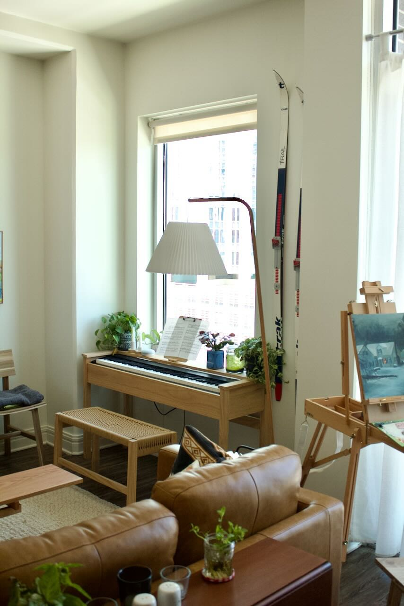
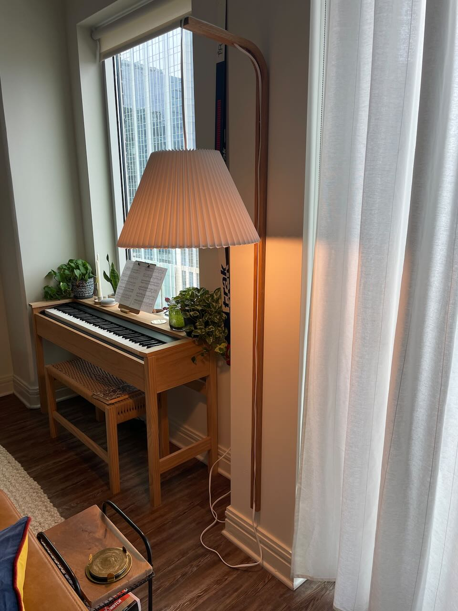

[Update] Big Bent Lamp
Friday 24, November 2023
Just a quick update on the status of my big bent lamp.
 I wasn’t a big fan of the pink shade so I swapped it out for a pleated paper shade.
I wasn’t a big fan of the pink shade so I swapped it out for a pleated paper shade.
 The weight of the shade ended up being too much for kerf bend at the base to handle, and the lamp ended up snapping when a slight breeze from the patio door caused the shade to swing.
The original freestanding lamp was not salvageable (glue did not work). Instead, I opted to lop off the original base and mount the remainder to the wall. 